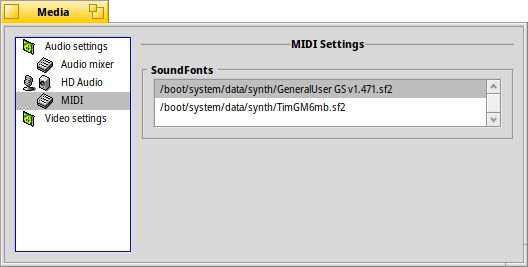

| Hakemisto |
|
Audioasetukset Audiomikseri HD audio MIDI Videoasetukset |
 Media-asetukset
Media-asetukset
| Työpöytäpalkki: | ||
| Sijainti: | /boot/system/preferences/Media | |
| Asetukset: | ~/config/settings/Media/* ~/config/settings/System Audio Mixer ~/config/settings/MediaPrefs Settings - Tallentaa paneelin ikkunasijainnin. |
Media-asetukset ohjaa järjestelmän audio- ja videoasetuksia. Nuo ulottuvat jokapäiväisistä tehtävistä kuten äänenvoimakkuuden säätäminen aivan alimman tason säätämisestä joita useimmat käyttäjät eivät koskaan tarvitse. Eri asetukset on ryhmitetty luokkiin.
 Audioasetukset
Audioasetukset

Siinä tapauksessa, että tietokoneessasi on useampi kuin yksi audioliitäntä, voit valita arvon valikoista , ja mitä a käytetään. Niissä harvinaisissa tapauksissa kun jotain järjestetään uudelleen jonoon audio-/videojärjestelmässäsi, kokeile napsauttaa -painiketta.
Voit myös valita -valinnan. Se lisää pienen kuvakkeen Työpöytäpalkkiin:

Työpöytäpalkin kuvakkeen vasemman eli ykköspainikkeen napsaus ponnauttaa näkyviin voimakkuuden liukusäätimen, jolla ohjataan master-lähtöä. Vaihtoehtoisesti hiiren rullan käyttö suoraan kuvakkeen päällä muuttaa myös äänenvoimakkuuden. Kuten näet pienestä oikean alakulman Kopiot-kahvasta voit upottaa tämän liukusäätimen esimerkiksi Työpöydälle.
Työpöytäpalkin oikean eli kakkospainikkeen napsauttaminen avaa valikon pikakuvakkeilla , ja avaa -sovellus.
Audiomikseri
Audiomikseri sallii sinun ohjata järjestelmän eri audiovirtojen voimakkuutta, esimerkiksi nykyisen suoritettavan sovelluksen audiolähtöä.

Tässä näemme master-lähdön ja parhaillaan suoritettavan MediaSoitin-sovelluksen äänenvoimakkuusliukusäätimen ja SDL-audiota käyttävän pelin. Näiden liukusäätimien avulla voit yhdistellä niiden audiolähtöjä niin että esimerkiksi peliäänet eivät vaimenna MediaSoittimen soittolistalta tulevaa musiikkia.
Liukusäätimien 'kaksoisnupit' edustavat stereon vasenta/oikeaa kanavaa. Niitä siirretään normaalisti samanaikaisesti, mutta voit ohjata tasapainoa liikuttamalla vain yhtä nuppia hiiren oikealla eli kakkospainikkeella.
Virran vaimennus valikosta .
Valikon -välilehti tarjoaa kaikkein alimman tason asetukset:

Näiden alimman tason säätöparametrien joukossa — joita luultavasti kokeilet, jos Haiku ei suoraan tue audiolaitteistoasi — on muutamia asetuksia, joista saatat kiinnostua.
| antaa hiukan lisää häiriötöntä tilaa särön välttämiseksi. | ||
| lisää balanssiliukusäätimen voimakkuusliukusäätimen alapuolelle -välilehteen 'kaksoisnuppien' sijasta. | ||
| avaa uudet välilehdet yhden kanavan sijoittamiseksi yhteen tai useampaan ja niiden voimakkuuden säätämiseksi. Esimerkiksi voit liittää vasemman lähtökanavat eteen vasemmalle ja keskelle ja asettaa eri voimakkuudet. | ||
| on valitsimet (alhainen prosessorikäyttö ja viive) ja (lievästi korkeampi prosessorikäyttö ja viive). |
HD-audio (nimeäminen riippuu laitteistosta)
Kun audiomikseri käsittelee eri audiovirtojen suoritusta kautta Haikun, tämä ohjaa fyysistä syötettä/lähtöä.

Siinä on kolme välilehteä:
| asettaa valikot ja . | ||
| asettaa kaiuttimien ja kuulokkeiden lähtötasot. | ||
| asettaa linjaliittimen ja mikrofonin syötetasot. |
On sanottava, että nämä laitteistotasoasetukset voivat näyttää hiukan huolimattomilta...
Haiku koestaa laitteistoa ja yrittää saada järkeä tiedosta, jotka tulevat vastaukseksi. Saatat nähdä eri kaksoiskappaleliukusäätimiä samalla otsakkeella jne. Sinun on kokeiltava hiukan löytääksesi sen mitä etsit.
MIDI
MIDI-asetukset näyttävät kaikki asennetut Äänikirjasimet, toisin sanoen instrumenttimäärittelyt. Valitse vain yksi, josta pidät. Kohteen kaksoisnapsautus avaa yläpuolella olevan kansion.
Löydät muutamia Äänikirjasimia HaikuVarastosta; ne näkyvät automaattisesti asennuksen jälkeen. Netistä ladatut Äänikirjasimet on siirrettävä manuaalisesti kohteeseen /boot/system/non-packaged/data/synth/ (tai vastaavaan Home-hierarkiaan, katso aihe Tiedostojärjestelmäsijoittelu).
Videoasetukset

Laitteisto- ja ajurituestasi riippuen voit valita arvot valikoista ja .
Kuten audioasetuksissa, painikkeen napsauttamien saattaa korjata oudot takeltelut.